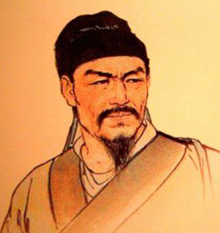

辛弃疾（1140年－1207年），字幼安，号稼轩，汉族，山东历城（今济南市历城区）人，南宋著名词人、将领。辛弃疾是宋代豪放派词人的代表人物之一，他的词作以其豪迈激昂的风格和深厚的爱国情怀在中国文学史上占有重要地位。辛弃疾的词内容丰富，题材广泛，既有描写自然景物的优美诗篇，也有抒发个人情感和政治抱负的深情之作。他的词语言精练，意境深远，常常通过细腻的描写和巧妙的比喻表达复杂的情感和哲理。辛弃疾的一生经历了南宋初年的动荡时期，他积极参与抗金斗争，表现出强烈的爱国热情和民族精神。作为一位将领，辛弃疾在军事上也有卓越的才能，多次率军抗击金兵，保卫国家疆土。辛弃疾的文学成就不仅在当时广受欢迎，对后世文学也产生了深远影响。他的词作被誉为“词中之龙”，在中国文学史上占有重要地位。
------ 青玉案·元夕 | 破阵子·为陈同甫赋壮词以寄之 | 永遇乐·京口北固亭怀古 ------
东风夜放花千树。更吹落，星如雨。
宝马雕车香满路。凤箫声动，玉壶光转，一夜鱼龙舞。
蛾儿雪柳黄金缕，笑语盈盈暗香去。
众里寻他千百度，蓦然回首，那人却在，灯火阑珊处。
醉里挑灯看剑，梦回吹角连营。
八百里分麾下炙，五十弦翻塞外声，沙场秋点兵。
马作的卢飞快，弓如霹雳弦惊。
了却君王天下事，赢得生前身后名。可怜白发生！
千古江山，英雄无觅，孙仲谋处。
舞榭歌台，风流总被，雨打风吹去。
斜阳草树，寻常巷陌，人道寄奴曾住。
想当年，金戈铁马，气吞万里如虎。
元嘉草草，封狼居胥，赢得仓皇北顾。
四十三年，望中犹记，烽火扬州路。
可堪回首，佛狸祠下，一片神鸦社鼓！
凭谁问，廉颇老矣，尚能饭否？
© 版权所有 自定义小组3